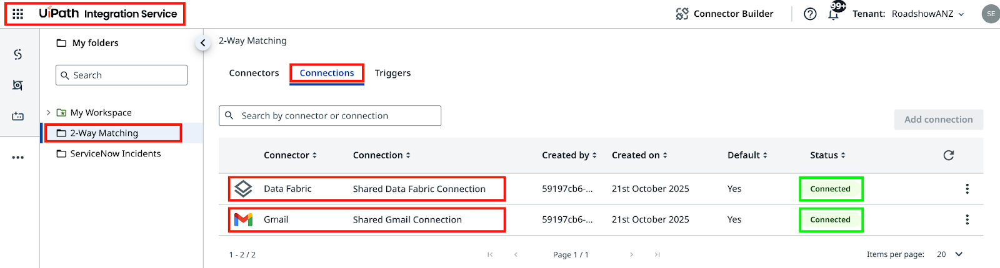
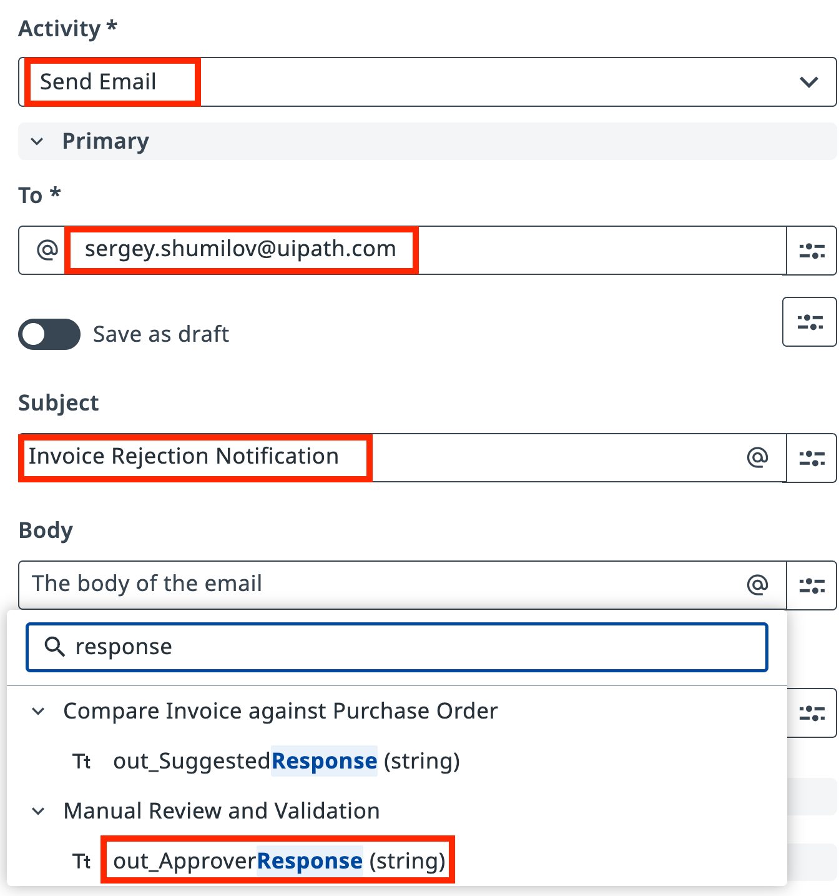

외부 서비스와 대화하기¶
이번 레슨의 계획입니다:
- 인보이스가 반려될 때마다 검증 단계의 응답 텍스트와 Gmail Connector를 사용해 공급업체에 메시지를 보냅니다.
- 승인된 인보이스 데이터를 Data Fabric에 저장해, 재무 팀이 자체 자동화로 지불을 처리할 수 있게 합니다.
목표¶
마지막 두 작업을 추가해 엔드투엔드 프로세스를 완성합니다: Reject 경로에는 반려 이메일 커넥터를, Approve 경로에는 데이터 저장 커넥터를 추가합니다. 둘 다 AgenticPractice 테넌트에 이미 구성된 Integration Service 커넥터를 사용합니다.
Integration Service와 Data Fabric¶
UiPath Integration Service는 API를 지원하는 애플리케이션을 자동화하는 가장 빠르고 편리한 방법입니다. 인가와 인증을 처리하고, API 연결 관리를 중앙화하며, SaaS 플랫폼 통합을 더 빠르게 만들어 줍니다.
테넌트에는 두 개의 연결이 이미 구성되어 있습니다:
- Gmail — 자동화 이메일 발송용 공유 메일박스
- Data Fabric — 구조화된 레코드(테이블, 파일 등)를 위한 공유 데이터 저장소
플랫폼 관리자가 이 연결들을 준비해 두었습니다. 인증을 직접 구성할 필요는 없습니다.

테넌트 확인
올바른 테넌트를 사용하고 있는지 확인하세요. 연결에 문제가 있으면 트레이너에게 문의하세요.
단계¶
1. 반려 이메일 작업 구성하기¶
인보이스가 검증을 통과하지 못하면 프로세스가 반려 이메일을 보내야 합니다. 이메일에는 에이전트가 생성하고 검토자가 수정할 기회를 가졌던 초안 응답이 사용됩니다.
Maestro Agentic Process에서 Reject 경로의 작업을 선택하고 액션 유형을 Execute Connector Activity로 설정합니다.
"Shared Gmail Connection"을 사용하고 "Send Email" 액티비티를 선택하세요.

Send Email 액티비티를 구성합니다: 수신자 주소에 여러분의 이메일 주소를 입력하고, 적절한 제목을 넣은 다음, 이메일 본문을 검토자가 수정한 버전인 out_ApproverResponse에 매핑합니다.

2. Data Fabric 저장 작업 구성하기¶
이제 반려된 인보이스가 어떻게 되는지는 알았습니다. 승인된 인보이스는 인보이스 데이터를 Data Fabric으로 전달해서, 재무 팀의 자체 UiPath 자동화가 이를 받아 지불을 처리할 수 있게 합니다. 재무 팀은 같은 데이터 소스에 연결된 자체 UiPath 자동화를 사용하고 있으므로, 우리가 할 일은 데이터를 그곳에 밀어 넣는 것뿐입니다.
Approve 경로의 작업을 선택하고 액션 유형을 Execute Connector Activity로 설정합니다.
공유 연결과 함께 Data Fabric 커넥터를 사용하고, Payments Queue 객체에 대한 Create Entity Record 액티비티를 쓰도록 작업을 구성하세요.

Manage Properties를 클릭해 Payments Queue 엔티티에 인보이스 데이터 필드를 추가합니다. InvoiceData 필드에 체크해 인보이스 데이터를 매핑하세요.

에이전트 출력의 인보이스 JSON 데이터를 InvoiceData 입력 필드에 매핑합니다. 이렇게 하면 승인된 모든 인보이스의 정보가 후속 처리를 위해 지불 큐로 전달됩니다.

3. 두 경로 모두 테스트하기¶
Debug를 클릭하고 프로세스를 실행해 보세요. RPA 자동화의 in_FailureProbability 매개변수로 반려 인보이스와 승인 인보이스가 얼마나 자주 나올지 조절할 수 있다는 점을 기억하세요.
Data Fabric에서 승인된 인보이스가 Payments Queue에 쌓이는 모습을 확인하세요:

공유 Gmail 계정에서 온 반려 이메일이 있는지 받은 편지함을 확인하세요. 각 이메일에는 에이전트가 식별하고 휴먼 검증자가 검토한 불일치 내역이 담겨 있습니다: